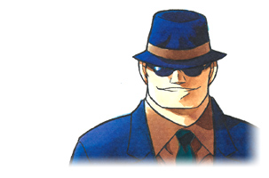
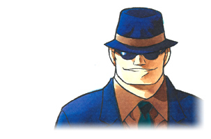

江戸川 コナン
高校生名探偵・工藤新一が
謎の黒ずくめの男達に
毒薬を飲まされ小さくなった姿。
正体を隠す為、
仮の名・江戸川コナンを名乗り、
幼なじみの毛利蘭の家に居候中。
謎の黒ずくめの男達に
毒薬を飲まされ小さくなった姿。
正体を隠す為、
仮の名・江戸川コナンを名乗り、
幼なじみの毛利蘭の家に居候中。
工藤 新一
高校生名探偵。
今は江戸川コナンの姿で,
難事件に挑んでいる。
今は江戸川コナンの姿で,
難事件に挑んでいる。
毛利 蘭
新一のガールフレンド。
空手部の女主将で
気が強い反面、
女の子らしい優しい
一面も持っている。
空手部の女主将で
気が強い反面、
女の子らしい優しい
一面も持っている。
毛利 小五郎
蘭の父親。ヘボ探偵
だったが、コナンの
おかげで世間からは
名探偵だと思われている
だったが、コナンの
おかげで世間からは
名探偵だと思われている
灰原 哀
謎の黒ずくめの組織の
一員だった宮野志保が、
コナン同様、子供の姿に
なった。阿笠博士の家に
居候し、コナン達の小学
校に通う。
一員だった宮野志保が、
コナン同様、子供の姿に
なった。阿笠博士の家に
居候し、コナン達の小学
校に通う。
阿笠 博士
風変わりな発明家。
コナンが新一である
秘密を守っている一人。
コナンが新一である
秘密を守っている一人。
服部 平次
関西の高校生探偵で、
かつては「東の工藤、
西の服部」と並び
称された。コナンの
正体を知っている。
かつては「東の工藤、
西の服部」と並び
称された。コナンの
正体を知っている。
少年探偵団
コナンと一緒に、
同級生の吉田歩美、
円谷光彦、小嶋元太が
探偵バッジを持って
事件に挑む。
同級生の吉田歩美、
円谷光彦、小嶋元太が
探偵バッジを持って
事件に挑む。
遠山 和葉
服部平次の幼馴染で、
同じ改方高校に通う
女子高生。気さくで
明るく、蘭とも仲良し。
特技は合気道で2段の
腕前。
同じ改方高校に通う
女子高生。気さくで
明るく、蘭とも仲良し。
特技は合気道で2段の
腕前。
怪盗キッド
月下の奇術師の異名を持つ
大泥棒。コナンのライバルで、
マジックが得意。キザなセリ
フと演出で、作中では女性フ
ァンも多い。工藤新一とは変
装する必要がないぐらいに
そっくり。
大泥棒。コナンのライバルで、
マジックが得意。キザなセリ
フと演出で、作中では女性フ
ァンも多い。工藤新一とは変
装する必要がないぐらいに
そっくり。
赤井 秀一
かつて組織に潜入して
いたFBI捜査官。
「銀の弾丸」（シルバー
ブレット）の異名をもつ。
黒ずくめの組織に殺されたと
思われていたが……
いたFBI捜査官。
「銀の弾丸」（シルバー
ブレット）の異名をもつ。
黒ずくめの組織に殺されたと
思われていたが……
安室 透
黒ずくめの組織に潜入
している公安警察官。
組織でのコードネーム
は、バーボン。私立探偵
としての顔も持つ切れ者。
している公安警察官。
組織でのコードネーム
は、バーボン。私立探偵
としての顔も持つ切れ者。
ジン
長身痩躯の冷酷な男。
鋭い観察力と狙撃の腕を
持つ。赤井のライバル
鋭い観察力と狙撃の腕を
持つ。赤井のライバル
ウォッカ
ジンの部下で、
行動をともにしている。
組織への忠誠心が高い。 
行動をともにしている。
組織への忠誠心が高い。 
ベルモット
表の顔はハリウッド女優。
黒ずくめの組織の幹部であり、
"あの方"のお気に入り。
黒ずくめの組織の幹部であり、
"あの方"のお気に入り。
水無 怜奈
黒ずくめ組織に潜入して
いるCIAの諜報員。
元・日売テレビの人気
アナウンサーで、組織での
コードネームは、キール。
いるCIAの諜報員。
元・日売テレビの人気
アナウンサーで、組織での
コードネームは、キール。